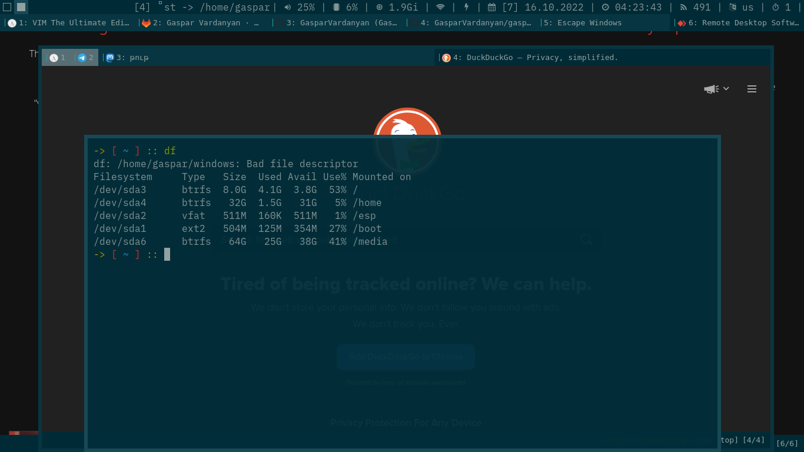

Escaping Windows
I’m a C++ software engineer. I have to build projects running on MS Windows. The beginning was very stressfull… I’ve had to navigate my windows in Windows’ stupid desktop, started using mouse :d, I’ve started to use Visual Studio and Qt Creator with incomplete and annoying ‘vim mode’ plugins. I’ve lost my productivity!
I’ve even changed the OS on my personal laptop to Windows 10 to get comfortable with it, to do my job faster, but… to me remember that was the first time I’ve heard the sound of my laptop’s cooler (after swithing to linux).
I’ve installed NeoVIM, qutebrowser, etc on my windows desktop, but… I’ve always had high CPU usage, so called Antimalware Service Executable in Task Manager (and other shts), Edge (շան երեսին ինչքան կանջատես, էլի ինքն իրան կմիանա վախտմ հետո) 4GB RAM usage (closed all windows), almost everything was slow (even icons were slowly loading in Task Manager :d), and a lot of stuff on my desktop (files, folders… unorganized workflow), plusss… MS tracking shts, ads, License problem (ofc KMS Auto solved it) and STRESS.
And This is How I’ve Escaped Windows Masochism!
I’ve reinstalled ArchLinux on my laptop, mounted my computer’s (Windows 10) filesystem (user’s ‘home’ folder) over lan:
sudo mount -t cifs -o user=USER,pass=PASSWORD,noperm //DESKTOP/USER $HOME/windows
and connected to my computer’s desktop via FreeRDP:
xfreerdp /u:'DESKTOP\USER' /p:'PASSWORD' /v:'COMPUTERS_LOCAL_IP' /dynamic-resolution -grab-keyboard

Now I edit my code in VIM, switch to Windows Desktop (Super+Tab) and press F5 (there’s only the Visual Studio open to compile and run my code). Now my workflow is the same as it was.
… Why RDP and not something like AnyDesk? Because AnyDesk is very slow, uncomfortable and closed source proprietary garbage (maybe RDP (server) too, but the client I use on my laptop is FOSS)!